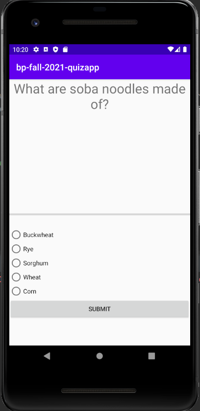
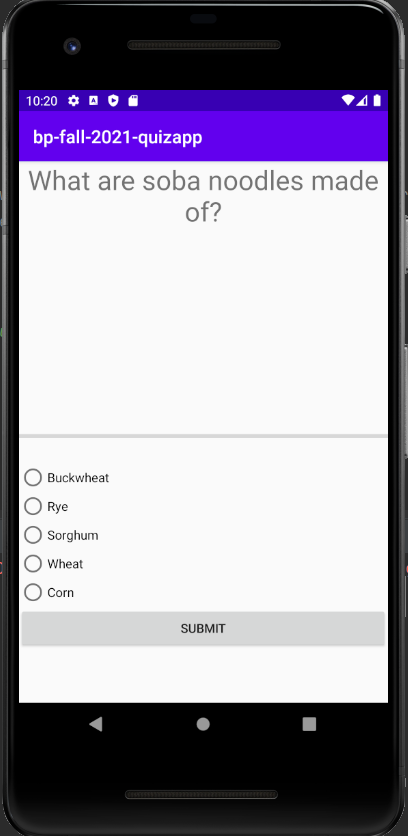

Hey, I'm David Dong!
And you're on my website! If you didn't know, I am currently a student at Rutgers University majoring in Computer Science and Physics. I chose these majors because I love learning new things and what better things to learn then computer science which is everywhere and physics which is everything!
This website was primarily made to chornicle my past projects and show them off. I will give a basic summary of each one and go into detail about the process and what I learned. Furthermore, since this website was also made so I could teach myself html, css, and javascript - I will also overextend and go into my hobbies and the books I have read and am currently reading. That's all and I hope you enjoy!
Some resources so you can link up with me:


 
